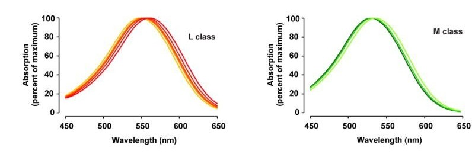
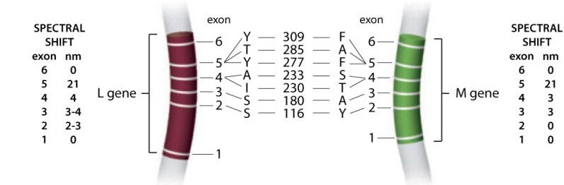

红绿色觉异常机制简介
Contents
再来一篇生物相关的。
道尔顿会混淆猩红色和绿色，粉色和蓝色，起初被认为是红色盲；但现代分子生物学研究表明他缺失 OPN1MW 基因，是绿色盲。
前置知识
交叉互换
TLDR：在减数分裂I 的前期，同源染色体配对、联会并发生交叉互换。
细胞周期
细胞周期可以分为 G0, G1, S, G2, M 期。 减数分裂（meiosis）分为减数分裂I 和减数分裂II。每个阶段又可以分为前期、中期、后期、末期（prophase, metaphase, anaphase, telophase）。
减数分裂I 中的基因重组
在减数分裂前期I，
- 同源染色体联会对齐。
- Spo11 蛋白在一条 DNA 双链上制造双链断裂（DSB, Double-strand break）。
- 然后 5’ → 3’ 核酸外切酶切除部分 5’ 端。
- 单链入侵（strand invasion）：3’ 单链尾入侵同源染色单体的一条 DNA 链，形成 D-loop。
减数分裂前期I 中的基因重组主要通过 SDSA 和 DHJ（双Holliday交叉） 机制进行。
- SDSA 机制：3’单链进行 DNA 合成后与原链相连，伴随基因转换（Gene conversion）。
- DHJ 机制：形成双Holliday交叉；对于双Holliday交叉，如果一边横着切，另一边从另一个方向切割，就会达到交叉互换（crossover）的效果。
单个Holliday交叉的切割
转录、翻译
中心法则：DNA 序列转录成 RNA，然后 RNA 翻译成蛋白质。
其中，在 RNA 翻译前，需要进行 RNA 剪接。在此过程中，外显子（exon）被合并，内含子被移除。
红绿色觉异常的机制
流行病学、分类
先天性红绿色觉异常（congenital red–green color vision deficiency）大约影响 8% 的男性和 0.4% 的女性。
按照受影响的视锥细胞种类（L, M）和严重程度（二色色盲、三色色觉异常）可以分为四种：
- 红色盲 protanopia
- 红色弱 protanomaly
- 绿色盲 deuteranopia
- 绿色弱 deuteranomaly
基因
感光细胞分为视杆细胞和视锥细胞。人的视锥细胞有三种感光蛋白：OPN1LW, OPN1MW, OPN1SW。其中，OPN1LW 和 OPN1MW 都位于 X 染色体的 Xq28 band 上，并且相邻： Human hg38 chrX:154121252-154292443 UCSC Genome Browser v485。
正常情况下，人拥有一个 OPN1LW，一个或多个 OPN1MW；不过 OPSIN-LCR 只表达 OPN1LW 和第一个 OPN1MW，多余的 OPN1MW 基因并不表达。OPN1LW 和 OPN1MW 基因的序列相似度超过 98%，这可能是因为这两个基因曾经是等位基因（部分其他灵长类动物的 X 染色体上只有 OPN1LW 或 OPN1MW 中的一个）。
以下简称 OPN1LW 为 L，OPN1MW 为 M。
L 蛋白的最大吸收波长约为 560 nm，M 蛋白约为 530 nm：

对于单色光，视蛋白会按各自吸收曲线的敏感度被激活。
对于混合光，感光信号可以近似看成不同波长的光强度线性相加的效果。
L 基因和 M 基因均由六个外显子组成。其中外显子 5 上 277 和 285 位点的差异造成了 20 nm 的吸收波长差异；而外显子 2, 3, 4 上一些位点也会影响吸收波长。

蛋白质、氨基酸的基础知识见 上一篇 blog
交叉互换产生异常基因
如果在 OPN1LW/OPN1MW 区段上发生了交叉互换，可能导致这几个基因的重排，导致后代编码的某种视蛋白的吸收波长发生变化，表现为色觉异常。
下面是一些交叉互换导致基因重排产生异常基因的示例。
这几个例子中默认考虑男性后代。
示例 A
假设正常女性的两条 X 染色体上 L 和 M 基因的排列分别为：
- L | M
- L M |
如果同源染色体在联会时发生了错位（misalignment），第一个染色单体的 L 错误地与第二个染色体的 M 配对，两个染色单体在这两个基因之后的位置发生交叉互换。会形成以下两个染色单体：
- L M M
- L
说明：
- 形成的的第一个染色体是正常的
- 而第二个染色体没有 M 基因，如果与 Y 染色体结合，生下的男孩是绿色盲。
示例 B
前一种情况是在外显子 5 后面交换的，而如果在外显子 5 的前面交换是不一样的情况。
假设正常女性的两条 X 染色体上 L 和 M 的外显子顺序分别是：
- LM: 1234 | 56 123456
- LM: 123456 1234 | 56
互换后：
- L*: 123456
- LM*M: 123456 123456 123456
说明：
- 第一个染色体有 L* 基因，其外显子 5 是 M 基因的，所以对应红色盲。
- 第二个染色体的前两个基因（L 和 M*）表达，当前情况下为绿色弱。如果两者是在其他位置交换，例如在外显子 1 后面换的，那么 L 和 M* 的吸收波长没有差异，为绿色盲。统称为绿色色觉异常。
M* 基因表示外显子 5 发生了突变的 M 基因，对应的吸收波长与 L 基因更接近（而不是 M 基因）。 L* 基因同理。
示例 C
如果一个染色体上有两个 M 基因，那更有可能发生错位联会：
- LM: 1234 | 56 123456
- LMM: 123456 1234 | 56 123456
互换后：
- L*M: 123456 123456
- LM*M: 123456 123456 123456
说明：
- 第一个对应红色色觉异常。
- 第二个对应绿色色觉异常。
性别差异
- 男性如果携带异常基因时（LM* Y）会表现为红绿色觉异常。
- 杂合女性（LM LM*）中，由于 X 染色体随机失活（X-inactivation），不同的视锥细胞表达不同的 OPN1LW 或 OPN1MW 基因，此人具有三色视觉；少数情况下可能表现为四色视觉。
[2] The genetics of normal and defective color vision
[3] Color blindness - Wikipedia
[4] Congenital red–green color blindness - Wikipedia
[5] OPN1LW - Wikipedia
总结
OPN1LW 与 OPN1MW 位于 X 染色体上，彼此相邻，且序列高度同源。所以在减数分裂的过程中容易发生错位交换，产生重排的基因。如果重排后的基因遗传到后代，就可能导致后代红绿色觉异常。
不同于单核苷酸多态性（SNP）引起的基因突变，红绿色觉异常的机制是错位联会和交叉互换所导致的基因重排，这种机制解释了其高发生率。
[6] Genetic Testing as a New Standard for Clinical Diagnosis of Color Vision Deficiencies
杂谈
我自己应该算红色色觉异常（protan），正如 wiki 上说的，有点分不清青色和白色，还有红色和黑色。
- 小学时体检，我就看不出石原氏色盲检测图。
- 初中一节语文课，当时讲的是《湖心亭看雪》，我被老师叫起来，不能从 PPT 的黑字中分清楚红字，那天受到了一些同学言语上的排斥。初中时还因为普通话不标准在公交车上被其他班的同学嘲笑过。那段时间恰好读到《窗后的少年》（Liar & Spy），里面的主人公因为潜在的味觉异常被同学欺负。
- 当得知大学录取的是第四志愿化学的时候，我第一反应是担心因为 CVD 被退学。
- 大一做无机化学实验时，pH 试纸看着犯迷糊。后来因为不擅长化学实验、更喜欢写代码等原因，去了计算机学院。
日常生活中，偶尔会造成一些不便，我最讨厌的是在黑色段落中用红色标注的文字。
后记
相比于其他遗传病（例如 G6PDD、地中海贫血），先天性红绿色觉异常确实算是很轻的遗传病了。
因为要写这篇 blog，去看了《声之形》。显然，西宫硝子因为听力障碍受到的影响远在我之上，无论是生活上的不便，或者是受到的欺凌。
或许是某种巧合，我的生日（MMDD）恰好和西宫硝子一样。
插画：聲の形
如果读者是软件从业人员，希望以后在做 UI 设计的时候可以考虑到这个占人口 4% 的群体，例如避免使用容易混淆的颜色标注关键信息。当然，其他身心障碍的群体也需要被关注。
时间
- 生物化学：2024 年 8 月
- 发布：2025 年 8 月
Author GWDx
LastMod 2025-08-16 (799265c)